发送进程和接受进程可能以不同的速度写入数据和读取数据，因此 TCP 需要使用缓存来存储数据。缓存还被 TCP 用来进行流量控制和差错控制。
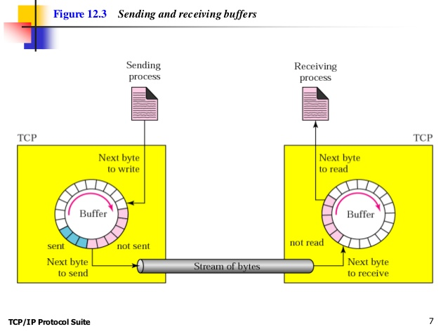
IP 层作为 TCP 的服务提供者，它必须以分组 (in packets) 为单位发送数据，而不是按照字节流来发送。在运输层，TCP 把若干个字节组成一个分组 (TCP groups a number of bytes together into a packet called a segment)，称为 报文段 (segment)。TCP 给每个报文段添加一个首部（用于控制），然后再把这个 报文段 (segment) 交付给 IP 层传输。这些 报文段 (segment)被封装成 IP 数据报 (IP datagram) 后发送出去。这些 报文段 (segment) 在接受时，有可能会失序、丢失，或受到损伤和重传，所有这些都是由 TCP 来处理的，而接受进程并不知道 TCP 的这些活动。
这些报文段 (segment)并不一定长度相同
面向的是虚连接，而不是物理连接，每一个 IP 数据报 (IP datagram) 可以走不同的路径到达终点。
报文段 (segment) 首部中有两个叫做序号 (sequence number) 和确认号 (acknowledgment number) 的字段。这两个字段都指的是字节 (byte number) 的编号，而不是 报文段 (segment) 的编号。
TCP 把在一个连接中要发送的所有数据字节都编上号，它随机选择一个位于 0 ~ (2^32 -1) 之间的一个数字作为第一个字节的编号。当字节都被编上号以后，TCP 就给每一个要发送的报文段指派一个序号 (sequence number)。
报文段中确认字段的值定义了某一方期望接受的下一个字节的编号，确认号是累积的。
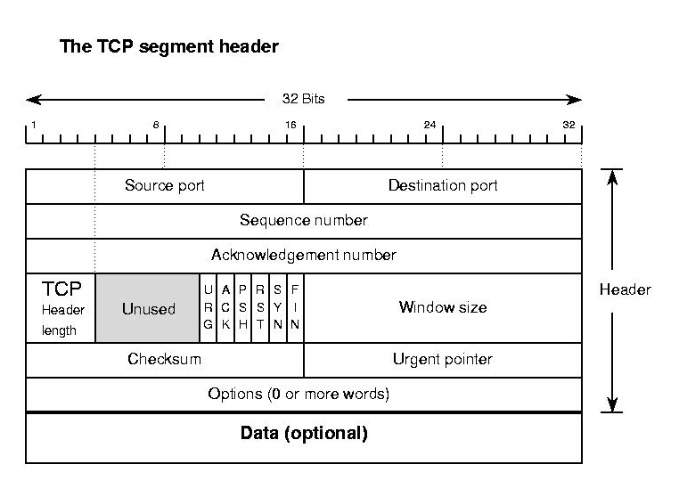
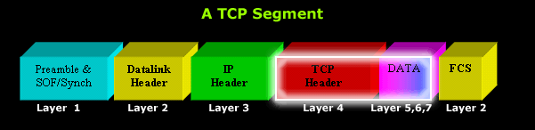
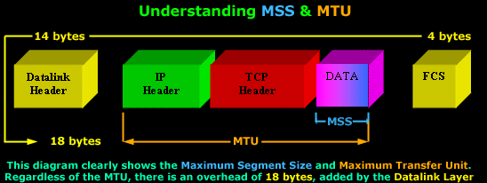
TCP 协议在运输层和终点之间建立了一条虚路径。同属于一个报文的所有报文段都沿着这条虚路径发送 (All of the segments belonging to a message are then sent over this virtual path)。
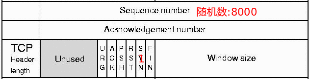
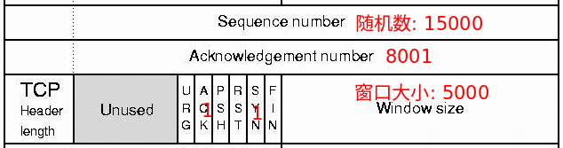
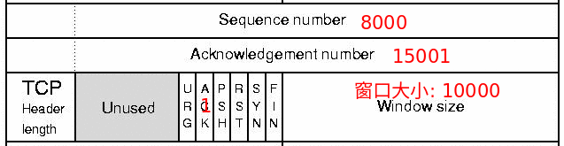
TCP 中使用的连接建立过程很容易碰到一个严重的安全问题，称为 SYN 洪泛攻击 (SYN flooding attack)。当一个或多个恶意的攻击者向某台服务器发送大量的 SYN 报文段，并通过伪造报文段中的源 IP 地址来假装每一个报文段来自不同的客户时，这个问题就发生了。服务器认为这些客户发来了主动打开请求，于是就分配必要的资源，如创建传送控制块 (TCP) 表，并设置一些计时器。然后 TCP 的服务器向这些假冒的客户发送 SYN + ACK 报文段，而这些报文段都丢失了。但是，在服务器等待握手的第三步的这段时间里，大量的资源被占用而没有利用。如果在很短的时间内，SYN 报文段的数量很大，服务器最终会因资源耗尽而不能接受来自合法客户的连接请求。这种 SYN 洪泛攻击属于一组称为 拒绝服务攻击 (denial of service attack) 的安全攻击，即攻击者用大量的服务请求垄断了一个系统，使这个系统因超载而拒绝为合法的请求提供服务。
TCP 的一些实现采取了一些策略减轻 SYN 攻击的影响:
数据可以双向传送，并且在同一个报文段中也可以携带确认，确认是随数据捎带过来的。举例，客户使用两个报文段发送了2000字节的数据，然后服务器使用一个报文段发送了2000字节的数据。前三个报文段既带有数据又带有确认，但最后一个报文段只有确认而没有数据。
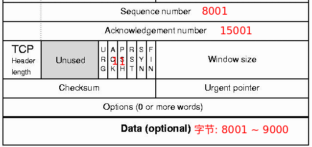
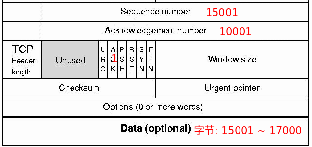
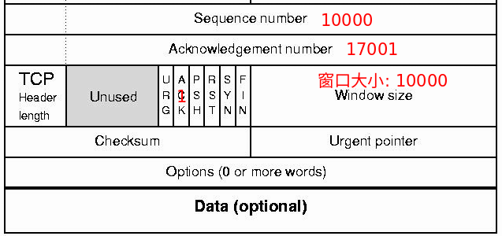
客户发送的数据报文段具有置 1 的 PSH (推送) 标志，因此服务器 TCP 知道要在收到这些数据后尽可能快地 (不必等待更多数据的到来)把它们交付给服务器进程。而从服务器发送来的报文段则没有把推送标志置 1.
通过发送一个 URG (紧急) 位置 1 的报文段，可以发送紧急字节。TCP 紧急模式只是发送方的应用程序对某一部分字节流做了标记，要求接收方的应用程序特殊对待，并不是优先处理，也不是加速数据服务。
目前，大多数 TCP 实现允许在连接终止时有两种选择：三次挥手和具有半关闭选项的四次挥手。
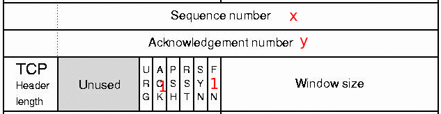
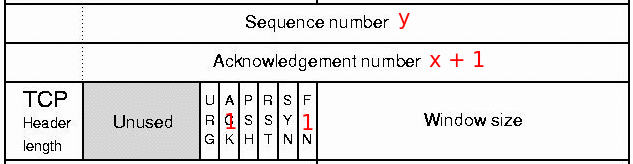
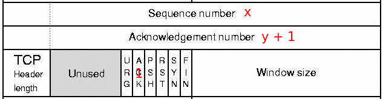
连接的一方停止接收数据，但是仍然发送数据，这称之为半关闭 (half-close)
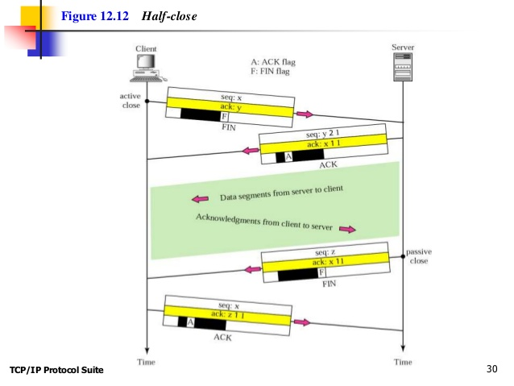
某一端的 TCP 可能会拒绝一个连接请求，也可能异常终止一条在用的连接，或者可能要终止一条空闲的连接，所有这些都是通过 RST (复位) 标志来完成的。
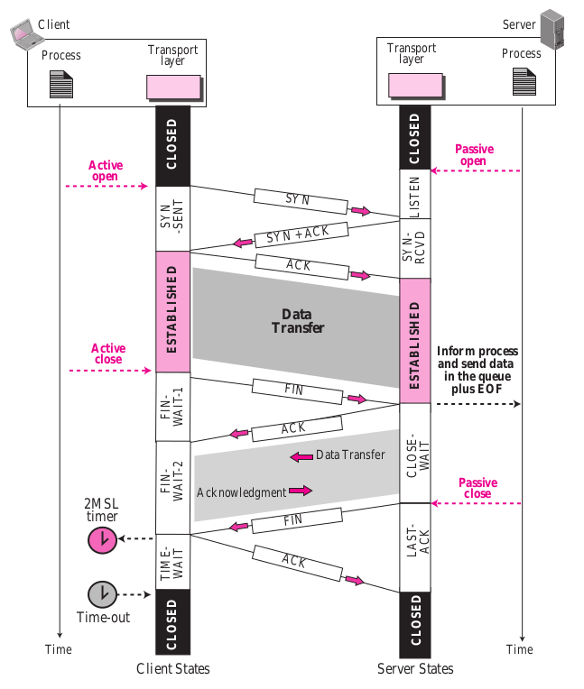
MSL 是一个报文段被丢弃之前在因特网中能够生存的最大时间。TCP 报文段是封装在生存时间 (TTL) 受限的 IP 数据报中。当 IP 数据报被丢弃时，封装在其中的 TCP 报文段也就丢失了。MSL 的常用数值是 30 ～ 60 秒。有两个理由使得我们需要 TIME-WAIT 状态和 2MSL 计时器:
关于 TIME-WAIT 还有弄清楚三点:
(1) 通常，只有一端 — 主动关闭 (发送第一条 FIN ) 的那一端会进入 TIME-WAIT 状态
(2) TIME-WAIT 一般是 0.5 ~ 2 分钟
(3) 如果连接处于 TIME-WAIT 时有分组到达，就重启 2MSL 的定时器
SO_LINGER 选项不建议使用，这会暗杀 TIME-WAIT 状态，强壮的应用程序永远都不应该干扰 TIME-WAIT 状态 —- 这是 TCP 可靠机制的重要组成部分。
连接建立和终止阶段更为常见的是使用三次挥手:
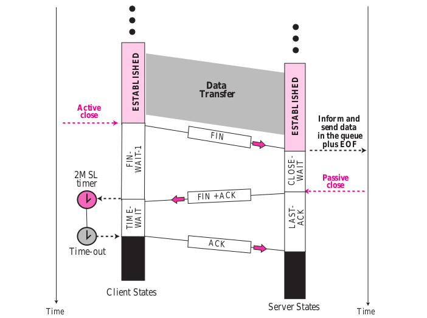
服务器发送 RST + ACK 报文段后，客户端进入 CLOSED 状态:
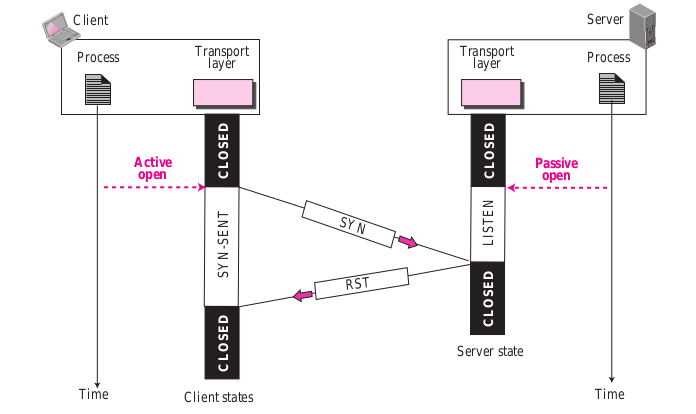
高并发服务器建议调小 TCP 协议的 time_wait 超时时间。操作系统默认 240 秒后,才会关闭处于 time_wait 状态的连接,在高并发访问下,服务器端会因为处于 time_wait 的连接数太多,可能无法建立新的连接,所以需要在服务器上调小此等待值。在 linux 服务器上请通过变更 /etc/sysctl.conf 文件去修改该缺省值 ( 秒 ):
1 | net.ipv4.tcp_fin_timeout = 30 |
调大服务器所支持的最大文件句柄数 (File Descriptor ,简写为 fd) 。主流操作系统的设计是将 TCP / UDP 连接采用与文件一样的方式去管理，即一个连接对应于一个 fd 。主流的 linux 服务器默认所支持最大 fd 数量为 1024，当并发连接数很大时很容易因为 fd 不足而出现 “ open too many files ” 错误,导致新的连接无法建立。 建议将 linux 服务器所支持的最大句柄数调高数倍 ( 与服务器的内存数量相关 ) 。
TCP 为每个方向的数据传送各使用两个窗口 (发送窗口和接受窗口)，也就是说总共有四个窗口。
发送窗口:
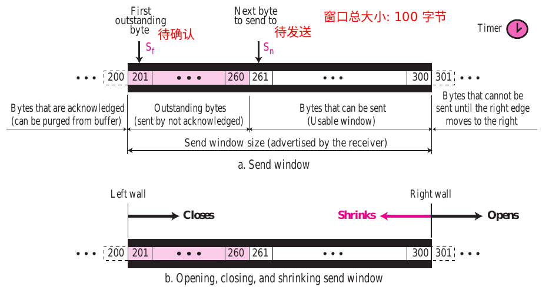
接受窗口:
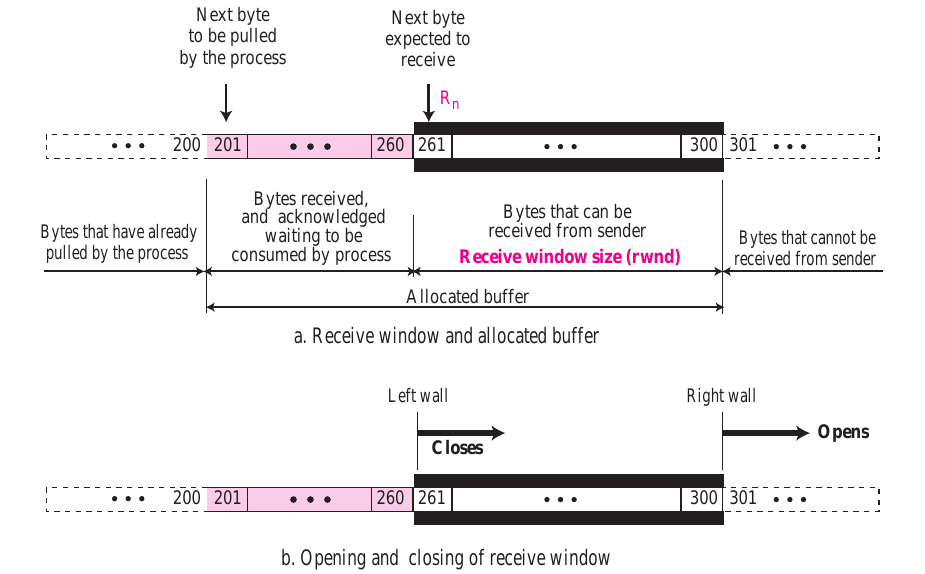
通常接受窗口的大小可以这样计算:
1 | rwnd = 缓存大小 - 正在等待被拉取的字节数 |
流量控制平衡了生产者生产数据的速度和消费者消耗数据的速度。为了实现流量控制，TCP 强制发送方和接收方不断调整它们的窗口大小，即使双方的缓存大小在连接建立时被固定了下来。流量控制的一个例子:
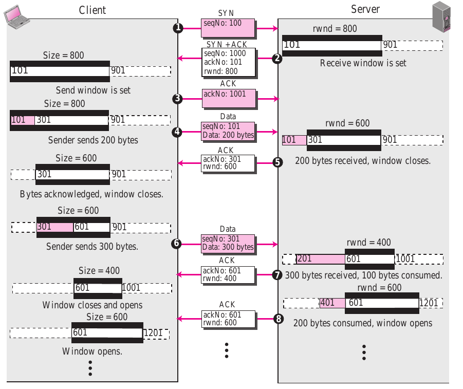
糊涂窗口综合症 Silly Window Syndrome: 在滑动窗口的操作中可能出现一个严重的问题，这就是发送应用程序产生数据的速度很慢，或者接受应用程序消耗数据的速度很慢，或者两者都有。不管是哪一种情况，都会使得发送数据的报文段很小，这就会降低运行的效率。例如 TCP 发送的报文段只包含 1 个字节的数据，那么意味着我们为此多发送了 40 字节 (20 字节的 IP 首部和 20 字节的 TCP 首部) 的数据，再算上数据链路层和物理层的额外开销后，这种低效率的程度就更加严重了。解决这种问题的方法是防止一个字节一个字节的发送数据。
如果是接收方接受数据的速度太慢，它在收到数据后将其存储在缓存中。现在缓存满了，接收方通知的窗口值为 0，这表示发送方必须立即停止发送数据。对于这种情况，有两种解决办法:
TCP 通过使用三个简单的工具来完成其差错控制: 校验和、确认以及超时。
ACK 报文段不消耗序号，也不需要被确认。
正常情况:
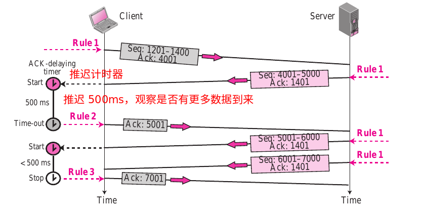
报文段丢失:
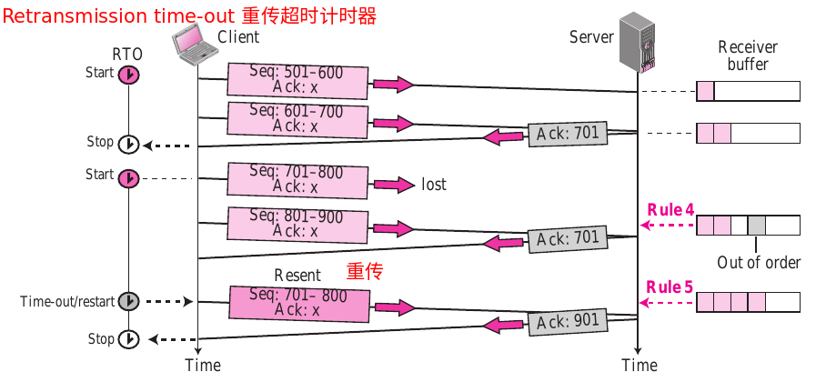
快重传 - 具有更大数值的 RTO:
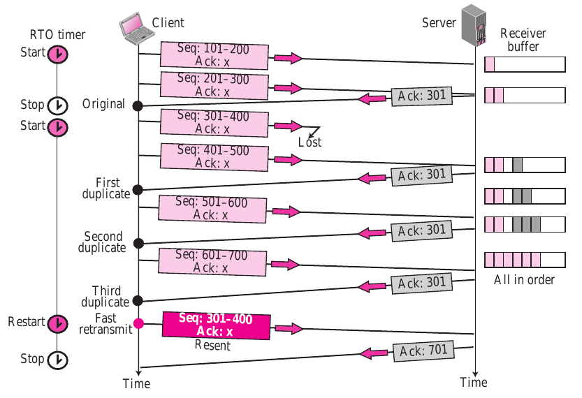
下一个确认自动纠正丢失确认带来的影响:
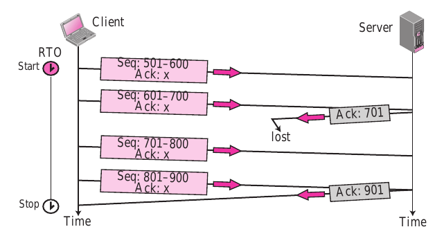
丢失的确认被重传的报文段纠正:
除了接收方的 rwnd 之外，网络的发送速度是决定发送方窗口大小的第二个实体。
真正的窗口大小: minimum(rwnd, cwnd)
TCP 处理拥塞的一般策略是基于三个阶段: 慢开始、拥塞避免和拥塞检测。
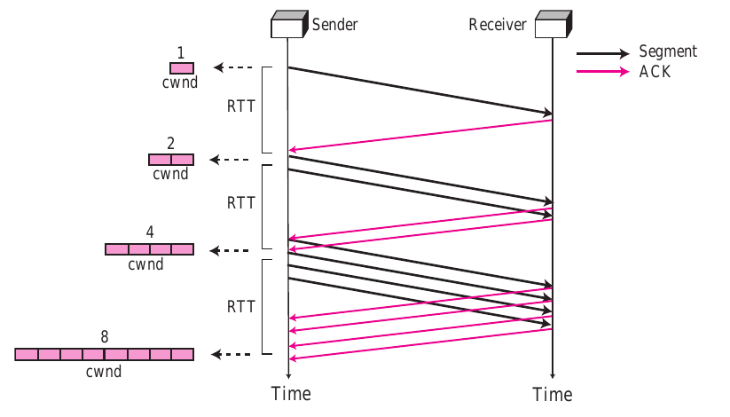

拥塞举例:
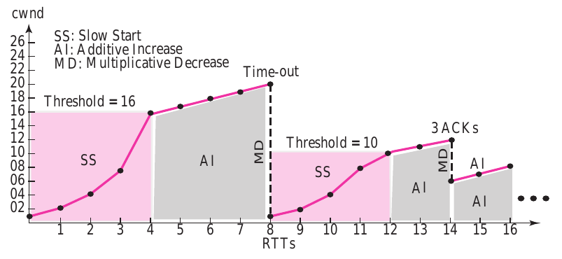
为了能够顺利地进行 TCP 的操作，大多数的 TCP 实现至少使用 4 个计时器:
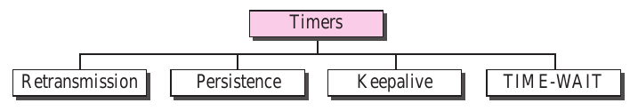
典型 TCP 实现:
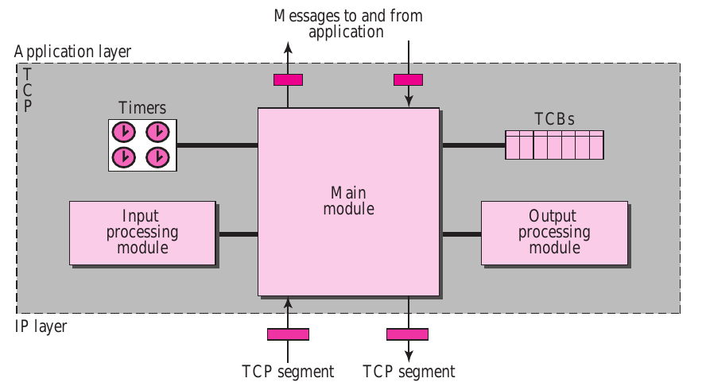
TCP 是个 “流” 协议，所谓流，就是没有界限的一串数据，就像河里的流水，它们是连成一片的，其间并没有分界线。发生粘包/拆包的原因:
write 写入的字节大小大于套接口发送缓冲区的大小MSS 大小的 TCP 分段payload 大于 MTU 进行 IP 分片业界主流解决方案:
int32 来表示消息的总长度1 | public void channelRead() { |
Netty 默认提供多种解码器用于处理半包问题:
1 | socketChannel.pipeline().addLast(new LineBasedFrameDecoder(1024)); |
摘自 memcached.c 源码:
1 | setsockopt(sfd, SOL_SOCKET, SO_REUSEADDR, (void *)&flags, sizeof(flags)); |
SO_REUSEADDR: SO_KEEPALIVE:SO_LINGER: TCP_NODELAY:以太网是 1500 字节，光纤是 4000 字节
双方使用 Sequence number 来跟踪它们已经发送的信息。然而序列号并不是由 0 开始的，而是由 ISN (Initial Sequence Number), 即一个随机生成的数字。The three-way handshake is necessary because both parties need to synchronize their segment sequence numbers used during their transmission.
1 | Alice ---> Bob SYNchronize with my Initial Sequence Number of X |
在这个过程中，产生了四个事件:
在实际中，第 2 个事件和第 3 个事件可以在放到一个包中，所以三次握手就够了:
1 | Bob <--- Alice SYN |
两次的话，只能保证一方建立一个 ISN，另一方 Acknowledge 它。但是另一方却无法发送任何数据。
ISN 不能从 0 开始因为: TCP sequence prediction attack The attacker hopes to correctly guess the sequence number to be used by the sending host. If they can do this, they will be able to send counterfeit(伪造) packets to the receiving host which will seem to originate from the sending host, even though the counterfeit(伪造) packets may in fact originate from some third host controlled by the attacker.
accept 一个文件描述符之后怎么提高安全性？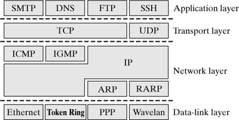
VPN 工作在数据链路层。
scp 卡死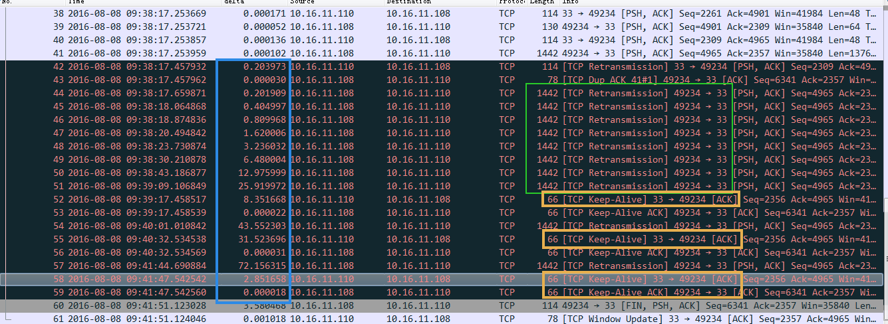
scp 之所以卡死是因为丢包了，客户端一直在重传，图中绿框scp 传输的时候实际路由大概是这样的:
1 | 容器A---> 宿主机1 ---> ……中间的路由设备 …… ---> 宿主机2 ---> 容器B |
scp 同一个文件到容器 B 没问题，所以我认为中间的路由设备没问题，问题出在两台宿主机上查看宿主机1的 dmesg 看到了这样一些信息
1 | 2016-08-08T08:15:27.125951+00:00 server kernel: openvswitch: ens2f0.627: dropped over-mtu packet: 1428 > 1400 |
到这里问题已经很明确了 openvswitch 收到了 一个 1428 大小的包因为比 mtu1400 要大，所以扔掉了，接着查看宿主机 1 的网卡 mtu 设置果然是 1400，悲催，马上修改 mtu 到 1500，问题解决。
MTU 后表现出来的症状?scp 的时候不动了，或者其他更复杂操作的时候不动了，卡死的状态。MTU 是 1500，但是抓包看到有个包 2700，没有卡死？Google：LSO、TSO，这样可以减轻 CPU 拆包的压力，节省CPU资源。问题描述:
JAVA 的 client 和 server，使用 socket 通信。server 使用 NIO。
client 向 server 建立连接三次握手已经完成，但 server 的 selector 没有响应到这连接。selector 没有销毁重建，一直用的都是一个。通过 ss -s 去看队列的溢出统计数据：
1 | 667399 times the listen queue of a socket overflowed |
反复看了几次之后发现这个 overflowed 一直在增加，那么可以明确的是 server 上全连接队列一定溢出了。
接着查看溢出后，OS怎么处理：
1 | # cat /proc/sys/net/ipv4/tcp_abort_on_overflow |
tcp_abort_on_overflow 为 0 表示如果三次握手第三步的时候全连接队列满了那么 server 扔掉 client 发过来的 ack（在 server 端认为连接还没建立起来）
为了证明客户端应用代码的异常跟全连接队列满有关系，我先把 tcp_abort_on_overflow 修改成 1，1 表示第三步的时候如果全连接队列满了， server 发送一个 reset 包给 client，表示废掉这个握手过程和这个连接（本来在 server 端这个连接就还没建立起来）。
接着测试然后在客户端异常中可以看到很多 connection reset by peer 的错误，到此证明客户端错误是这个原因导致的。
The maximum queue length for incoming connection indications (a request to connect) is set to 50. If a connection indication arrives when the queue is full, the connection is refused.
Apparently your ServerSocket never accepts any connections, just listens. You must either call accept() and start handling the connection or increase the backlog queue size:
1 | new ServerSocket(port, 100) |
简单来说 TCP 三次握手后有个 accept 队列，进到这个队列才能从 Listen 变成 accept，默认 backlog 值是 50，很容易就满了。满了之后握手第三步的时候server就忽略了 client 发过来的 ack 包（隔一段时间 server 重发握手第二步的 syn+ack 包给 client），如果这个连接一直排不上队就异常了。

如上图所示，这里有两个队列： syns queue(半连接队列）； accept queue（全连接队列）
三次握手中，在第一步 server 收到 client 的 syn后，把相关信息放到半连接队列中，同时回复 syn+ack 给 client（第二步）；
比如
syn floods攻击就是针对半连接队列的，攻击方不停地建连接，但是建连接的时候只做第一步，第二步中攻击方收到server的syn+ack后故意扔掉什么也不做，导致server上这个队列满其它正常请求无法进来。
第三步的时候 server 收到 client 的 ack ，如果这时全连接队列没满，那么从半连接队列拿出相关信息放入到全连接队列中，否则按 tcp_abort_on_overflow 指示的执行。
这时如果全连接队列满了并且 tcp_abort_on_overflow 是 0 的话，server 过一段时间再次发送 syn+ack 给 client（也就是重新走握手的第二步），如果 client 超时等待比较短，就很容易异常了。
在我们的 os 中 retry 第二步的默认次数是 2 （centos默认是5次）：
1 | net.ipv4.tcp_synack_retries = 2 |
如果TCP连接队列溢出，有哪些指标可以看呢？
上述解决过程有点绕，那么下次再出现类似问题有什么更快更明确的手段来确认这个问题呢？
1 | netstat -s |
1 | [root@server ~]# netstat -s | egrep "listen|LISTEN" |
比如上面看到的 667399 times ，表示全连接队列溢出的次数，隔几秒钟执行下，如果这个数字一直在增加的话肯定全连接队列偶尔满了。
ss 命令:
1 | [root@server ~]# ss -lnt |
上面看到的第二列 Send-Q 表示第三列的 listen 端口上的全连接队列最大为 50，第一列 Recv-Q 为全连接队列当前使用了多少。
全连接队列的大小取决于：min(backlog, somaxconn) . backlog是在socket创建的时候传入的，somaxconn是一个os级别的系统参数
半连接队列的大小取决于：max(64, /proc/sys/net/ipv4/tcp_max_syn_backlog)。 不同版本的os会有些差异